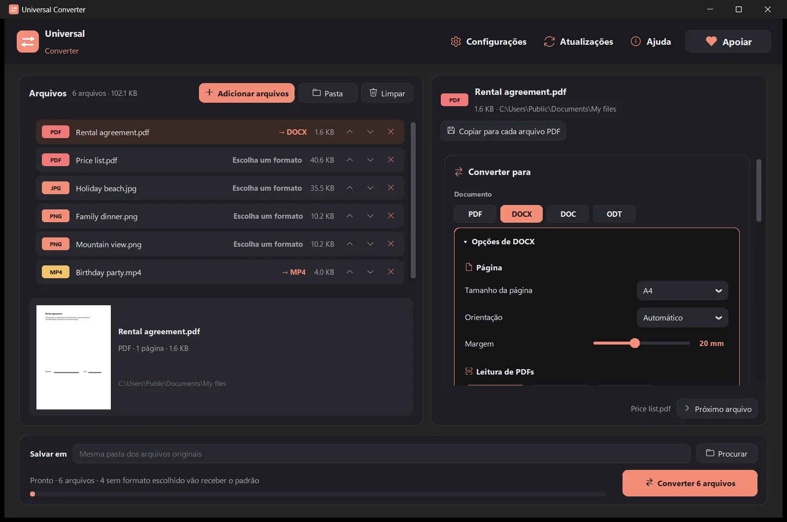
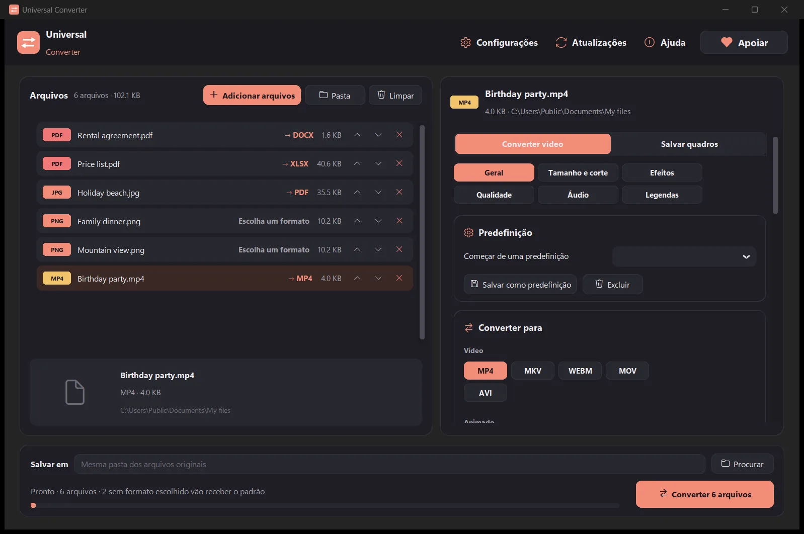
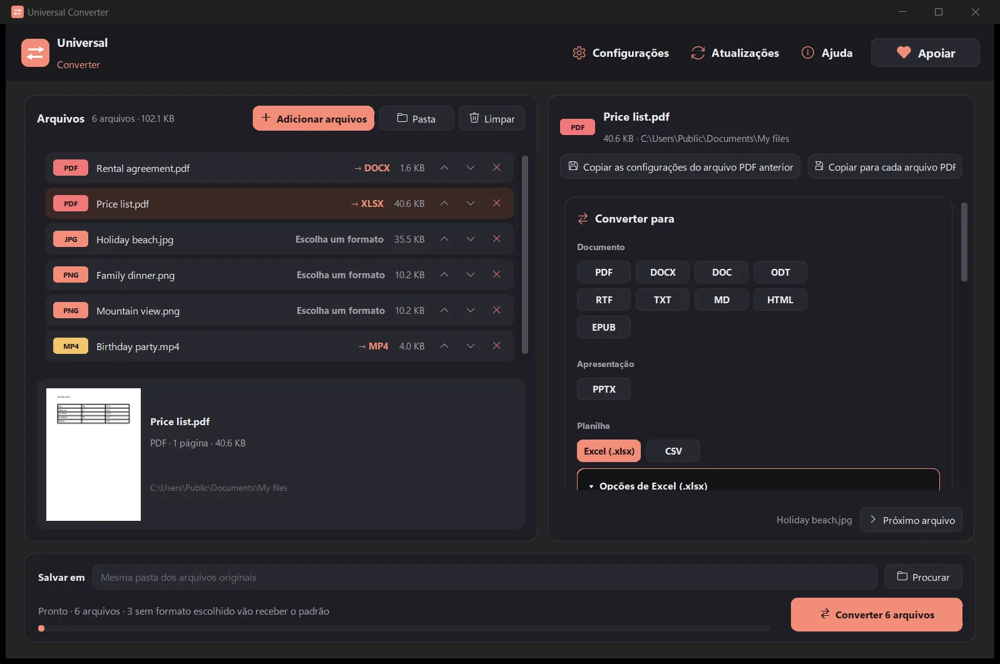
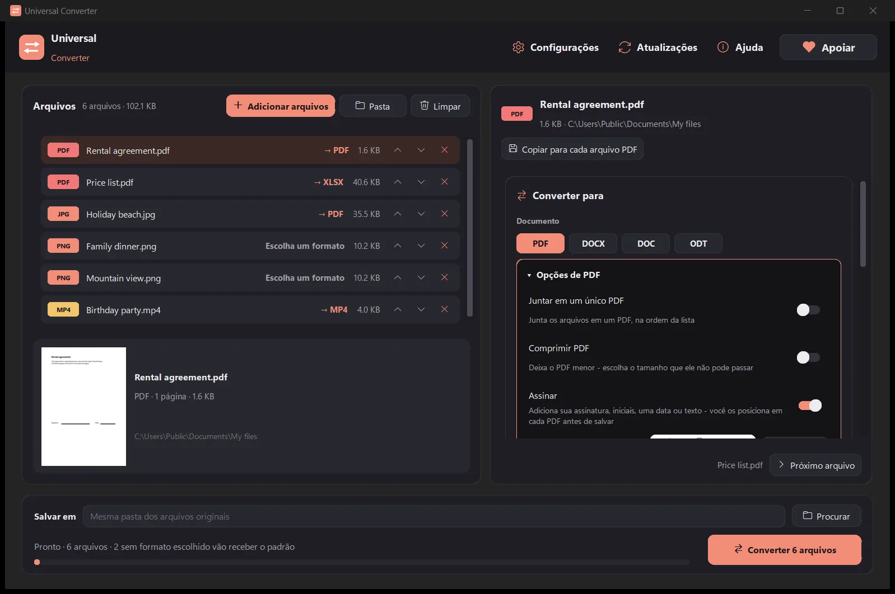
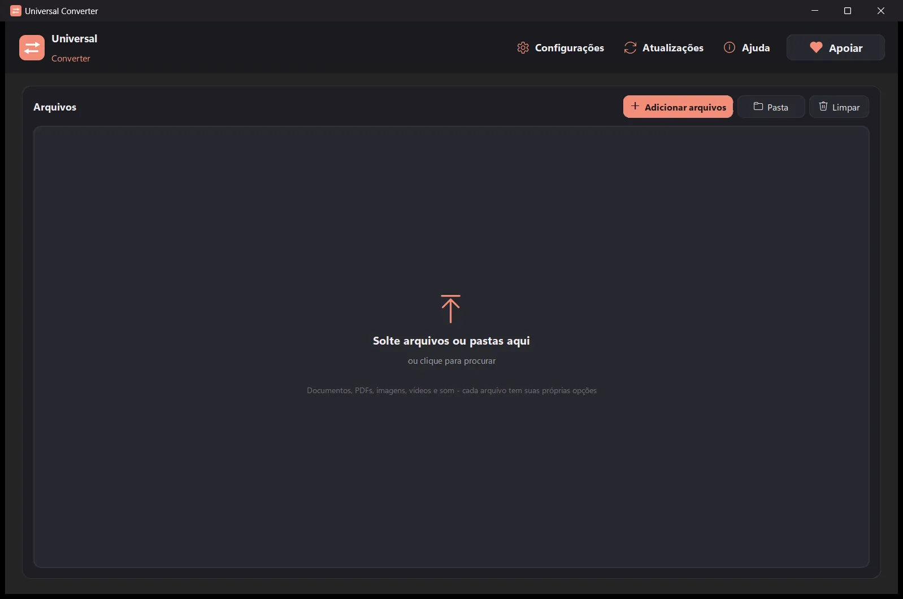

Converta seus arquivos no seu próprio aparelho
Imagens, documentos, vídeo e áudio, PDFs e tabelas para o Excel, tudo em um só app. Nada é enviado: seus arquivos nunca saem do seu aparelho.
Como instalar e atualizar
- Abra o .dmg baixado e arraste o Universal Converter para Aplicativos.
- Abra o app. Na primeira vez, o macOS o bloqueia porque ele não é assinado pela Apple: clique em OK.
- Abra Ajustes do Sistema > Privacidade e Segurança, role para baixo, clique em Abrir Mesmo Assim e digite sua senha. Você só faz isso uma vez.
Atualizações: se você permitir quando o app abrir pela primeira vez, ele procura novas versões sempre que inicia, verifica a assinatura digital delas e as instala quando você quiser.
Como instalar e atualizar
- Toque em Baixar para Android no seu celular.
- Abra o arquivo baixado. Se o Android pedir, permita que seu navegador ou gerenciador de arquivos instale apps.
- Toque em Instalar.
Atualizações: o app verifica mais ou menos uma vez por dia e avisa quando uma nova versão está pronta. Baixe do mesmo jeito e instale por cima da antiga; suas configurações são mantidas.
Como instalar e atualizar
- Baixe o arquivo .AppImage.
- Torne-o executável: clique com o botão direito, Propriedades > Permissões e permita executá-lo como programa (ou num terminal: chmod +x Universal-Converter-*.AppImage).
- Dê um clique duplo. Nada é instalado: o app é este único arquivo.
Atualizações: se você permitir na primeira vez que o app abrir, ele procura novas versões sempre que inicia, verifica a assinatura digital delas e substitui o arquivo AppImage onde ele está.

Privado
Tudo roda no seu aparelho. Sem uploads, sem fila de espera, sem limite de tamanho.
Grátis
Grátis para usar, sem anúncios, sem conta e sem marca d'água.
34 idiomas
Inglês, grego, espanhol, italiano, alemão, francês, português (Portugal e Brasil), polonês, russo, árabe, hebraico, chinês, japonês, coreano, tâmil, africâner, iorubá, hauçá, hindi, indonésio, turco, vietnamita, sueco, neerlandês, dinamarquês, ucraniano, tcheco, romeno, búlgaro, norueguês, malaio, filipino e suaíli.
Cinco ferramentas em uma janela

Documentos e PDF
Converta entre PDF, Word, ODT, RTF, TXT, Markdown, HTML, EPUB, PowerPoint e Excel. Transforme páginas em imagens e junte vários arquivos em um PDF. Fontes, tamanhos e cores são mantidos. Deixe PDFs menores, no tamanho que você escolher. Digitalizações e formulários preenchidos viram texto e tabelas editáveis, com o layout da página. Tabelas, também sem linhas como nos extratos bancários, entram no Word como tabelas de verdade, e arquivos antigos do Word (.doc) e do PowerPoint (.ppt) abrem.
Imagens
Converta entre JPG, PNG, WEBP, TIFF, BMP, GIF e ICO. Redimensione por pixels, porcentagem ou tamanho de arquivo, junte imagens em um arquivo PDF ou Word e leia o texto das imagens (OCR). Também dá para adicionar PDFs: cada página vira uma imagem.

Vídeo
Converta vídeos entre MP4, MKV, WebM, MOV e AVI e comprima-os com AV1, H.265, H.264 ou VP9. Corte trechos, recorte, gire e redimensione, crie GIFs, salve quadros como imagens ou fique só com o som em MP3, M4A, AAC, FLAC, WAV, AIFF, OGG, AC-3, MP2, WavPack, MKA, CAF ou Opus. Com vários vídeos, cada um pode ter configurações próprias. No Android: MP4, MKV, WebM, MOV ou GIF, ou o som em MP3, M4A, AAC, OGG, Opus, FLAC, WAV, AIFF ou MKA; corte trechos, recorte, gire, redimensione e salve quadros.

Excel
Tire tabelas de PDFs, digitalizações e fotos para o Excel ou CSV: extratos bancários, notas fiscais, listas de preços. Lê grego, inglês, espanhol e mais de 30 outros idiomas.

Assinar
Assine PDFs e preencha formulários. Digite seu nome em um estilo de letra cursiva, desenhe sua assinatura ou use uma foto dela. O app encontra sozinho as linhas de assinatura, ou você clica ou toca onde vão a assinatura, as iniciais, a data, o texto ou as marcas. Assine vários arquivos de uma vez; os originais ficam intactos.
- Usa sua placa de vídeo para vídeo quando pode: em geral de 5 a 20 vezes mais rápido.
- Arraste pastas inteiras: todos os arquivos são convertidos de uma vez.
- Uma tela para todos os arquivos: adicione documentos, imagens e vídeos juntos, e cada um tem as próprias opções.
- Avisa sobre novas versões; no Windows, no Mac e no Linux pode instalá-las para você, com verificação digital.
- Visual claro e escuro, combinando com o seu aparelho.
Como funciona
- Abra o Universal Converter.
- Arraste seus arquivos ou uma pasta inteira para a janela, ou clique em Adicionar arquivos.
- Clique em Converter. Os novos arquivos são salvos ao lado dos originais, ou na pasta que você escolher.

O que ele faz
- Converta um PDF para Word
- Converta documentos do Word para PDF
- Junte vários arquivos em um PDF
- Comprima um PDF para o tamanho que você escolher
- Comprima um PDF para 100 KB, 200 KB ou qualquer tamanho para formulários online
- Converta páginas de PDF em imagens JPG
- Transforme um documento digitalizado em um arquivo do Word editável
- Converta imagens entre JPG, PNG, WEBP e mais
- Redimensione imagens ou reduza-as a um tamanho de arquivo
- Redimensione uma foto ou assinatura para 20 KB, 50 KB ou pixels exatos
- Junte fotos em um PDF
- JPG para PDF com menos de 100 KB
- Copie o texto de uma imagem (OCR)
- Comprima um vídeo sem enviá-lo
- Converta vídeos entre MP4, MKV, WebM, MOV e AVI
- Salve o som de um vídeo em MP3
- Crie um GIF a partir de um vídeo
- Leve tabelas de um PDF para o Excel
- Converta um extrato bancário em PDF para Excel
- Extraia tabelas de notas fiscais em PDF para o Excel
- Assine um PDF
- Preencha um formulário em PDF
Dúvidas
É grátis mesmo?
Sim. O Universal Converter é grátis para usar, sem anúncios, sem conta e sem limite de tempo. Se ele te ajudar, você pode apoiar o desenvolvimento com uma contribuição voluntária, mas nunca é obrigatório.
Meus arquivos são enviados para algum lugar?
Não. Toda conversão acontece no seu próprio aparelho, então funciona também sem conexão com a internet. O app só fica online para procurar atualizações, para baixar os alfabetos de reconhecimento de texto que você escolher e, se você permitir, para enviar relatórios de erro anônimos.
É seguro baixar?
Sim. Antes de entrarem nesta página, os downloads para Windows, Mac, Linux e Android de cada versão são verificados por cerca de 60–70 antivírus no VirusTotal; o link embaixo de cada botão de download abre o relatório daquele arquivo. O app não mostra anúncios nem coleta dados pessoais, e a versão da Microsoft Store também é verificada e assinada pela Microsoft.
O Windows mostra um aviso do SmartScreen. Isso é normal?
Sim. O instalador ainda não tem assinatura de código, então o Windows não o reconhece. Escolha "Mais informações" e depois "Executar assim mesmo". As atualizações depois disso são verificadas digitalmente pelo próprio app. Ou instale pela Microsoft Store, que não mostra aviso.
Como abro no Mac?
Abra o arquivo baixado e arraste o Universal Converter para Aplicativos. O app não é assinado pela Apple, então na primeira vez que você abri-lo o macOS vai bloqueá-lo: clique em OK, abra Ajustes do Sistema > Privacidade e Segurança, clique em "Abrir Mesmo Assim" e digite sua senha. Você só faz isso uma vez.
Como instalo no Android?
Baixe o APK no seu celular, abra-o e permita a instalação quando for solicitado (Android 10 ou mais recente). Os 34 idiomas já vêm no app; escolha um nas Configurações do app. O app avisa quando há uma nova versão.
Quais idiomas ele fala?
O app está em inglês, grego, espanhol, italiano, alemão, francês, português (Portugal e Brasil), polonês, russo, árabe, hebraico, chinês, japonês, coreano, tâmil, africâner, iorubá, hauçá, hindi, indonésio, turco, vietnamita, sueco, neerlandês, dinamarquês, ucraniano, tcheco, romeno, búlgaro, norueguês, malaio, filipino e suaíli. Você escolhe no instalador, ou depois em Configurações.